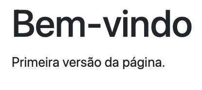
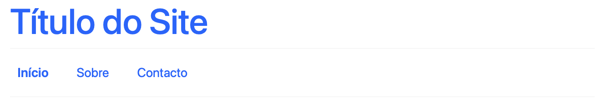

2 HTML, CSS e Bootstrap
2.2 Estrutura HTML
Um documento HTML mínimo tem sempre a mesma forma: uma declaração de tipo de documento, seguida de um elemento html, dividido num head (metadados, não visíveis ao público, apenas para os programadores) e num body (o conteúdo visível para o público):
<!DOCTYPE html>
<html lang="pt">
<head>
<meta charset="UTF-8">
<title>A Minha Página</title>
</head>
<body>
<h1>Bem-vindo</h1>
<p>Primeira versão da página.</p>
</body>
</html>Este código renderiza no browser como mostrado na figura Figura 2.1:

body são visíveis.
Combinando as tags estruturais já apresentadas, uma página ganha uma organização muito mais clara do que um único bloco de divs indiferenciados. Cada tag rotula o tipo de informação que contém:
<!DOCTYPE html>
<html lang="pt">
<head>
<meta charset="UTF-8">
<meta name="viewport" content="width=device-width, initial-scale=1">
<title>Página de Exemplo</title>
</head>
<body>
<header>
<h1>Título do Site</h1>
<!-- outros elementos no header-->
</header>
<nav><!-- menu aqui --></nav>
<main>
<section>
<h2>Introdução</h2>
<p>Conteúdo inicial.</p>
</section>
<section>
<h2>Outra secção</h2>
<p>Podem colocar-se quantas secções se quiser.</p>
</section>
</main>
<footer>© 2026</footer>
</body>
</html>Este código renderiza no browser como mostrado na figura Figura 2.2 — repare-se que, sem qualquer CSS, as tags estruturais não trazem estilo visual próprio; a organização em blocos existe, mas ainda não se vê:

header, o nav e as section dentro do main organizam o conteúdo, mas visualmente não se distinguem umas das outras.
Dois elementos usam-se com particular frequência numa aplicação Web: uma lista de ligações dentro de nav, para a navegação, e um form, para recolher dados de quem usa a página.
<nav>
<ul>
<li><a href="#home">Início</a></li>
<li><a href="#sobre">Sobre</a></li>
<li><a href="#contacto">Contacto</a></li>
</ul>
</nav>Este código renderiza no browser como mostrado na figura Figura 2.3: sem CSS, uma lista de ligações continua a parecer uma lista, com marcadores e a formatação azul e sublinhada por omissão do browser para as ligações:

<section>
<h2>Formulário de contacto</h2>
<form>
<label for="nome">Nome</label>
<input id="nome" name="nome" type="text">
<label for="email">Email</label>
<input id="email" name="email" type="email">
<button type="submit">Enviar</button>
</form>
</section>Este código renderiza no browser como mostrado na figura Figura 2.4: mais uma vez, sem CSS, os campos e o botão aparecem com o estilo por omissão do browser:

Note-se o atributo for de cada label, que corresponde ao id do respetivo input: é o que liga visualmente uma etiqueta ao seu campo, e o que permite a um leitor de ecrã anunciar corretamente o formulário. O tag inputé dos poucos tags que não se usam com um a abertura e um fecho: <input> </input>, apenas tem uma estrutura <input .../>, cuja parte terminal significa que este tag “abre e fecha”. Na maior parte das vezes omite-se a fórmula no final /> e fica apenas >, como se mostra nos exemlos de código acima.
2.3 Aplicar Estilos Diretamente
O HTML descreve a estrutura da página; a apresentação é responsabilidade do CSS (Cascading Style Sheets). Esta secção mostra as três formas de associar CSS ao HTML, e depois os dois seletores principais — classe e identificador — usados para direcionar essas regras a elementos concretos.
2.3.1 Três Formas de Aplicar CSS
O CSS pode ser associado ao HTML de três formas distintas.
Inline, diretamente no atributo style de um elemento. Por exemplo num elemento h1:
Este código renderiza no browser como mostrado na figura Figura 2.5:

Interno, num bloco <style> dentro do <head> do ficheiro htmla que se refere:
<head>
<meta charset="UTF-8">
<style>
:root { --brand: #0d6efd; }
body { font-family: system-ui, sans-serif; line-height:1.5; }
nav ul { list-style:none; display:flex; gap:1rem; padding:0; }
nav a { text-decoration:none; padding:0.4rem 0.6rem; }
nav a:hover { background:var(--brand); }
</style>
</head>A regra :root { --brand: #0d6efd; } define uma variável CSS (uma custom property), reutilizada depois com var(--brand): é útil para manter a mesma cor em vários sítios da folha de estilos sem a repetir, e para a poder alterar num único sítio.
Externo, num ficheiro .css à parte, ligado pelo tag <link> posicionadao no header do documento onde se pretende aplicar os estilos:
/* styles.css */
:root { --brand: #0d6efd; }
body { font-family: system-ui, sans-serif; line-height:1.5; }
nav ul { list-style:none; display:flex; gap:1rem; padding:0; }
nav a { text-decoration:none; padding:0.4rem 0.6rem; }
nav a:hover { background: var(--brand); }Aplicando estas regras (por qualquer uma das três formas) à lista de navegação apresentada atrás, o resultado é mostrado na figura Figura 2.6: os marcadores da lista desaparecem, as ligações deixam de estar sublinhadas, e ficam dispostas lado a lado:
Das três, o CSS externo é, em geral, a melhor prática: separa claramente a estrutura (HTML) da apresentação (CSS), permite reutilizar o mesmo ficheiro em várias páginas, e mantém cada documento mais curto e mais fácil de ler.
2.3.2 Classes, IDs e Especificidade
Uma vez definida a estrutura no HTML, o CSS vai conter um conjunto de instruções que vai dizer aos elementos do HTML como vão ser “apresentados”. Para aplicar estilos aos elementos, o CSS usa dois seletores principais: a classe (class), para grupos de elementos, e o identificador (id), que deve ser único na página. Uma classe pode então designar vários elementos numa página, os quais serão formatados visualmente de forma idêntica. Pode ter-se um número qualquer de elementos da mesma classe no mesmo documento. Já o seletor id só pode deve aplicado a um único elemento numa página. Diz-se por isso que o idé mais específico dp que a class.
Quando se escrevem regras CSS para uma classe coloca-se um ponto antes do nome da classe: .nome_classe, seguida das instruções de formatação entre { }, cada uma delas separada por ponto-e-vírgula. Do lado do HTML os elementos que se pretendem formatar com essas regras têm definido o atributo class=nome_classe. No caso dos elementos HTML com atributo id=nome_id, serão formatados do lado das CSS tal como no caso das classes mas, em vez de o seletor começar por ., começa por #(#nome_id).
Um mesmo elemento HTML pode ter aplicadas várias classes em simultâneo, separadas por espaço. Neste caso o elemento HTML será formatado com as regras de TODAS as classes aplicadas:
Vejam-se os exemplos seguintes:
<h1 id="titulo" class="titulo">Título do Site</h1>
<nav class="menu">
<ul>
<li><a class="menu__link ativo" href="#home">Início</a></li>
<li><a class="menu__link" href="#sobre">Sobre</a></li>
<li><a class="menu__link" href="#contacto">Contacto</a></li>
</ul>
</nav>:root { --brand: #0d6efd; }
#titulo { color: var(--brand); } /* id: único por página */
.menu { border-block: 1px solid #eee; padding: 0.75rem 0; }
.menu__link { text-decoration: none; padding: 0.4rem 0.6rem; }
.menu__link.ativo { font-weight: 600; }Este código renderiza no browser como mostrado na figura Figura 2.7: o título fica colorido pela regra #titulo, e o menu fica formatado pelas regras .menu/.menu__link, com a ligação ativo a negrito:

Quando o mesmo elemento HTML é formatado por duas regras CSS que entram em conflito, como por exemplo a determinação da sua cor, a regra que vence é determinada pela sua especificidade. Apresenta-se em baixo a lista de especificidades por ordem decrescente:
!important(a evitar; torna o CSS difícil de manter)- Estilo inline, ou seja dentro de cada elemento (
style="...") - Identificador (
#id) - Classe (
.classe), atributo ou pseudoclasse - Elemento (
h1,p,a, …)
Por exemplo, com que cor ficaria o título do exemplo anterior com esta CSS:
h1 { color: black; }
.titulo { color: blue; }
#titulo { color: green; } /* vence as duas regras anteriores */O identificador (#titulo) é mais específico do que a classe e do que o elemento, por isso vence: o título fica verde, como mostrado na figura Figura 2.8:

#titulo vence as regras h1 e .titulo, por ser mais específica.
Ou, se se aplica-se a especificidade !important:
h1 { color: black !important; } /* vence porque tem maior especificidade */
.titulo { color: blue; }
#titulo { color: green; }Agora é a regra do elemento (h1) que vence, apesar de ser a menos específica das três, porque tem !important: o título fica preto, como mostrado na figura Figura 2.9:

h1 vence as regras .titulo e #titulo, apesar de ser a menos específica, por ter !important.
2.4 Aplicar Estilos Usando Frameworks
2.4.1 Bootstrap
Escrever e manter todo o CSS de uma aplicação a partir do zero é um trabalho considerável, sobretudo quando se pretende que o resultado seja responsivo (ajustado a diferentes tamanhos de ecrã) e visualmente consistente. Um framework CSS como o Bootstrap resolve este problema, fornecendo:
- Produtividade e consistência visual, através de classes utilitárias prontas a usar
- Responsividade já implementada, através de uma grelha (grid) e de classes de espaçamento
- Componentes testados e acessíveis (formulários, barras de navegação, botões, entre outros)
O Bootstrap pode ser incluído diretamente por CDN (Content Delivery Network), sem necessidade de instalação: uma folha de estilos no <head>, e um ficheiro JavaScript (para os componentes interativos) antes do fecho de </body>.
<head>
<link href="https://cdn.jsdelivr.net/npm/bootstrap@5.3.3/dist/css/bootstrap.min.css" rel="stylesheet">
</head>
<body>
<!-- conteúdo da página -->
<script src="https://cdn.jsdelivr.net/npm/bootstrap@5.3.3/dist/js/bootstrap.bundle.min.js"></script>
</body>Uma barra de navegação (navbar), com o Bootstrap, fica pronta em poucas linhas, já responsiva (colapsa num menu para ecrãs estreitos):
<nav class="navbar navbar-expand-md bg-light border-bottom">
<div class="container">
<a class="navbar-brand" href="#">Meu Site</a>
<button class="navbar-toggler" type="button" data-bs-toggle="collapse" data-bs-target="#nav1">
<span class="navbar-toggler-icon"></span>
</button>
<div id="nav1" class="collapse navbar-collapse">
<ul class="navbar-nav ms-auto gap-2">
<li class="nav-item"><a class="nav-link" href="#home">Início</a></li>
<li class="nav-item"><a class="nav-link" href="#sobre">Sobre</a></li>
<li class="nav-item"><a class="nav-link" href="#contacto">Contacto</a></li>
</ul>
</div>
</div>
</nav>Este código renderiza no browser como mostrado na figura Figura 2.10:

Um formulário ganha o mesmo tratamento visual através das classes form-label e form-control:
<section class="container my-4">
<h2>Formulário de contacto</h2>
<form class="row g-3 col-lg-6">
<div class="col-12">
<label for="nome" class="form-label">Nome</label>
<input id="nome" name="nome" type="text" class="form-control">
</div>
<div class="col-12">
<label for="email" class="form-label">Email</label>
<input id="email" name="email" type="email" class="form-control">
</div>
<div class="col-12">
<button class="btn btn-primary" type="submit">Enviar</button>
</div>
</form>
</section>Este código renderiza no browser como mostrado na figura Figura 2.11: compare-se com a figura Figura 2.4, o mesmo formulário sem Bootstrap:

form-label, form-control, btn btn-primary).
O mesmo sistema de grelha organiza também o conteúdo principal em colunas. A grelha do Bootstrap divide cada linha (row) em doze colunas; a classe col-6 ocupa seis dessas doze, ou seja, metade da largura:
<main class="container my-4">
<div class="row">
<div class="col-6">
<p>Conteúdo principal…</p>
</div>
<aside class="col-6">
<p>Barra lateral…</p>
</aside>
</div>
</main>Este código renderiza no browser como mostrado na figura Figura 2.12: o conteúdo principal e a barra lateral ficam lado a lado, cada um a ocupar metade da largura, embora sem qualquer borda visível a marcar as colunas — é a grelha do Bootstrap que reserva o espaço de cada uma:

2.4.2 Outros Frameworks
O Bootstrap não é o único framework CSS disponível, apenas o mais didático para começar, pela sua abordagem baseada em componentes prontos a usar. Vale a pena conhecer, ainda que sem aprofundar, algumas alternativas populares:
- Tailwind CSS
-
Um framework utilitário (utility-first): em vez de componentes prontos como
navbaroucard, fornece classes de baixo nível, uma por propriedade CSS (por exemploflex,pt-4,text-center), que se combinam diretamente no HTML para construir qualquer visual à medida. - Bulma
- Baseado apenas em CSS, sem qualquer JavaScript; sintaxe próxima do Bootstrap, mas sem componentes interativos (menus, modais) prontos a usar.
- Materialize
- Implementa o Material Design da Google (sombras, elevação, cores vivas, animações); visualmente mais opinativo do que o Bootstrap.
- Foundation
- Orientado a projetos maiores e mais personalizados; mais flexível do que o Bootstrap, mas com uma curva de aprendizagem mais exigente.
A tabela seguinte compara estes frameworks pela abordagem que seguem e pela facilidade de aprendizagem:
| Framework | Abordagem | Curva de aprendizagem |
|---|---|---|
| Bootstrap | Componentes prontos (navbar, card, btn) |
Baixa |
| Tailwind CSS | Classes utilitárias, uma por propriedade CSS | Média/alta |
| Bulma | Componentes CSS, sem JavaScript | Baixa |
| Materialize | Componentes segundo o Material Design | Média |
| Foundation | Componentes configuráveis, mais flexíveis | Alta |
2.5 Boas Práticas
- Preferir CSS externo; evitar
!importante o excesso de estilos inline - Usar uma nomenclatura consistente para classes (por exemplo, a convenção BEM:
bloco__elemento--modificador) - Pensar em acessibilidade desde o início: contraste de cores,
labelassociado a cadainput, ordem lógica de navegação por teclado - Testar sempre a responsividade da página, em diferentes larguras de ecrã
2.6 Exercício: as Páginas Estáticas da Aplicação “World Capitals”
Aplicando o que foi apresentado nas secções anteriores, constroem-se agora as páginas visuais da aplicação usada ao longo dos LABs práticos (ver Apêndice D e seguintes): uma API que serve informação sobre países e as respetivas capitais. Nesta fase, as páginas são inteiramente estáticas, em HTML/CSS/Bootstrap, sem qualquer JavaScript: os dados apresentados são fixos no próprio HTML, e os formulários ainda não estão ligados a nenhum servidor. É esse o trabalho reservado aos LABs, que se limitarão a acrescentar fetch() a este código já pronto.
Todas as páginas partilham a mesma barra de navegação:
<nav class="navbar navbar-expand-md bg-light border-bottom">
<div class="container">
<a class="navbar-brand" href="index.html">World Capitals</a>
<button class="navbar-toggler" type="button" data-bs-toggle="collapse" data-bs-target="#nav1">
<span class="navbar-toggler-icon"></span>
</button>
<div id="nav1" class="collapse navbar-collapse">
<ul class="navbar-nav ms-auto gap-2">
<li class="nav-item"><a class="nav-link" href="index.html">Países</a></li>
<li class="nav-item"><a class="nav-link" href="capital.html">Consultar Capital</a></li>
<li class="nav-item"><a class="nav-link" href="paises-editar.html">Gerir Países</a></li>
<li class="nav-item"><a class="nav-link" href="login.html">Entrar</a></li>
</ul>
</div>
</div>
</nav>Este código renderiza no browser como mostrado na figura Figura 2.13:
A partir desta navbar comum, constroem-se quatro páginas:
- Listagem de países (
index.html): uma tabela Bootstrap, com alguns países fixos no HTML a título de exemplo. Nos LABs, esta tabela passa a ser preenchida dinamicamente a partir do resultado de/country. - Autenticação (
login.html): um formulário com os camposuserepass, com os mesmos nomes que o endpoint/loginespera receber. - Consulta de capital (
capital.html): um formulário simples, com um único campocountrycode. - Gestão de países (
paises-editar.html): três formulários distintos, um por operação, todos a apontar para o mesmo endpoint/countryEdit, distinguidos pelo campo escondidooperation(ver a nota sobre este desenho no Capítulo 7).
Estas quatro páginas, ligadas entre si pela barra de navegação comum, constituem já um pequeno sítio Web completo e funcional, mesmo sem qualquer lógica do lado do servidor: é possível navegar entre elas, preencher os formulários e submetê-los. O que falta, ainda, é haver um servidor a responder a esses pedidos, e é isso que a matéria dos capítulos seguintes vai fornecer.
O código completo e autónomo das quatro páginas, pronto a copiar para um editor e a abrir diretamente no browser, está reunido no Apêndice A.